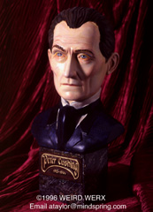
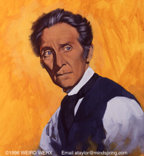
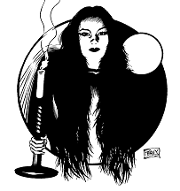

Weird Werx of Powder Springs, Georgia is announcing the release of their first figural resin product: a bust of popular horror genre actor Peter Cushing. Cushing is best known for his performances in Hammer Films' Dracula (as Van Helsing) and Frankenstein (as Doctor Frankenstein) series.


The piece was sculpted by noted artist Jim Peavy. Peavy's art has graced the covers of successful genre publications such as Wonder Magazine and Scary Monsters Magazine. "I can't believe that so little has been done of Peter Cushing", notes Peavy, "he is one of my all time favorite actors and I believe that this bust is a fitting tribute to him. I really loved sculpting it."
The bust is approximately 10 inches high by 6 inches wide including base
and features a relief name plate bearing the actor's birth and death dates.
The full color box top features a brand new painting of the actor by Peavy.
Cast in Poly-resin, the piece retails for $59.95 + $4.50 shipping and
handling and is currently available from
The company plans to release a photoprint of Peavy's full color cover art for the box in the near future. Size and pricing information will be forthcoming.
Also in the Werx is a bronze version limited to twenty pieces signed and numbered by sculptor Jim Peavy. More information on this piece is forthcoming.
The next figure Weird Werx plans to release will be Luna from the 1935 Tod Browning film Mark of the Vampire. The kit should be available in August of 1996.

The Gremlins in the Garage webzine is a production of Firefly Design. If you have any questions or comments please get in touch.
Copyright � 1994-2026 Firefly Design.